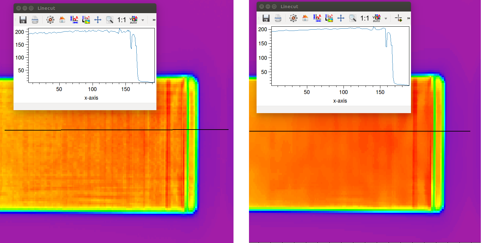
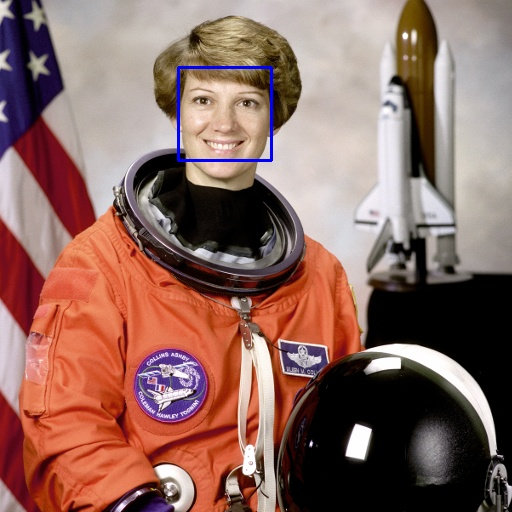
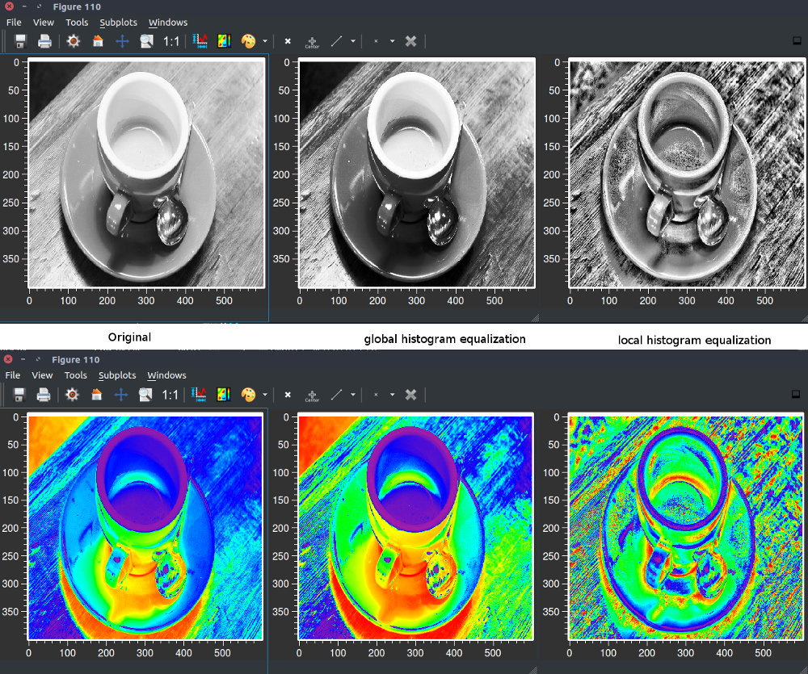
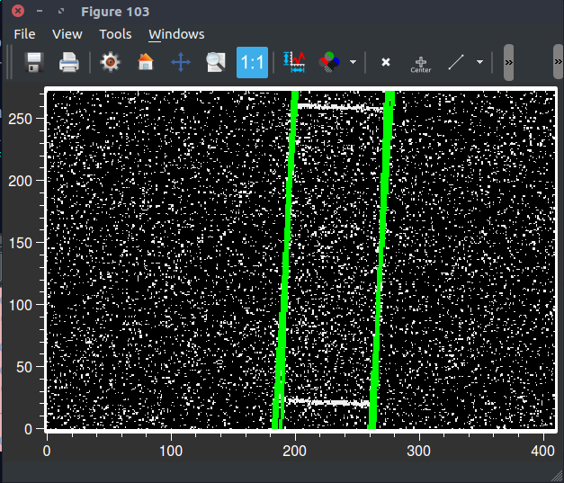
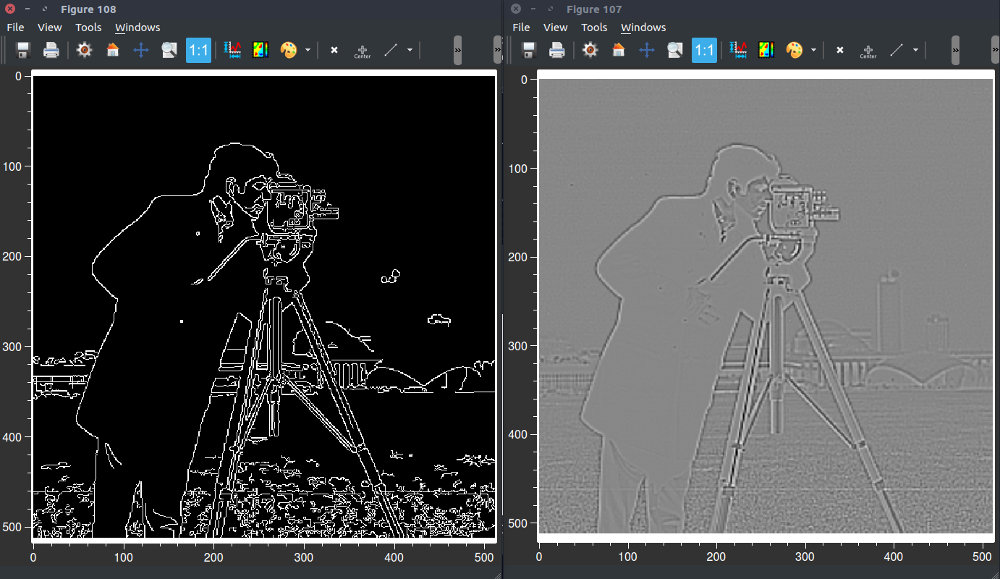

OpenCV¶
Most important features:
computer vision and machine learning software library
more than 2500 optimized algorithms
detect, recognize faces, identify objects, classify human actions in videos
track camera movements, track moving objects, extract 3d models of objects
produce 3d point clouds
For more information visit: OpenCV Webpage
Itom offers the full power of python 3 in combination with OpenCV 4. All OpenCV functions can be easily used and the results are visualized and further processed (e.g. output to Matlab) in python.
OpenCV is the standard open source image processing library. It is used in many applications for low-level image processing tasks up to dedicated computer vision applications. It can be used in C++, Java as well as python even for commercial projects. The methods are implemented in a very efficient manner and can be used with all sorts of images (color, monochrome and different depths).
Plenty of books for learning OpenCV are available and for a fast “Getting Started” with image processing using itom and OpenCV you might just have a look at Digitale Bildverarbeitung .
OpenCV offers all standard image processing methods like:
Linear filtering
Global transforms (especially Fourier)
Local operations
Morphological image processing
Camera calibration and geometrical transforms
Non-linear filters
Feature detection methods
etc.
… enough to let you really implement sophisticated image processing applications with a minimum of overhead.
Examples¶
The image shows noise reduction while keeping small details (in this case the peak at right side of the intensity distribution) using a bilateral filter.
{kind=link}
Something more sophisticated: Haar Cascades for feature detection (face detection):
{kind=link}
And a local histogram equalization in order to make local features visible (see the edge of the cup and the wood texture).
{kind=link}
The following screenshot shows the application of the so-called Hough transform used to find (in this case: long) lines in a very noisy image.
{kind=link}
Often, edge detection and noise reduction are first applied in order to perform further processing like the Hough transform. The following image shows two often used versions for edge enhancement or edge detection: Laplacian filtering and the famous Canny filter.
{kind=link}
Books¶
Digitale Bildverarbeitung (http://www.oimv.de/bv100.pdf):
Haist, Tobias. "Digitale Bildverarbeitung mit einer Einfuehrung in Python, OpenCV & ITOM", ITO Stuttgart (2018).
Learning OpenCV 3 (http://shop.oreilly.com/product/0636920044765.do):
Kaehler, Adrian, and Gary Bradski. "Learning OpenCV 3: computer vision in C++ with the OpenCV library." "O'Reilly Media, Inc." (2016).